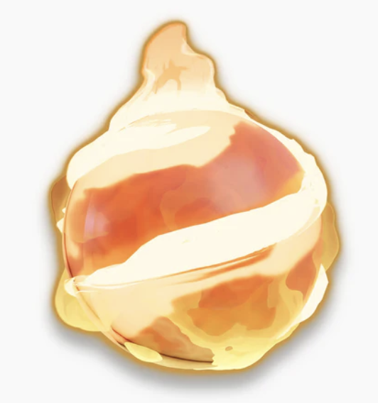

Clash of Music (not official)

It is kind of like a music battle app, that takes inspiration from things like gartic phone (in a way, like the collaborative feeling of it). I'm thinking of first making it a 2v2v2 game initially, where the 3rd team votes the winner, then fights the winner, and the loser team votes for the overall winner from there. You essentially compose music with friends and I plan to make it very interactive, very different from just a music software like musescore studio or flat.io.
It's just something I feel like wanting to do.
1. making the music with the app, 2. interactive things like sabotaging, or picking the mood, etc (a lot) 3. multiplayer (3 teams of 2) rotate music maker, each round is unique, 4. voting. with minigames for audience (and interactive)